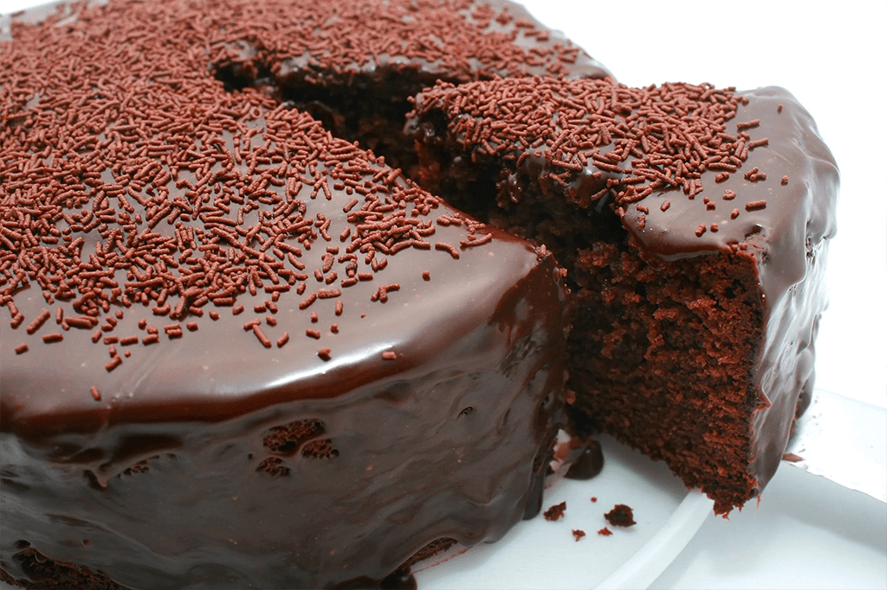

Receita de Bolo de Chocolate

Sobre o Bolo
O bolo de chocolate teve a sua origem no século XVII, quando o cacau começou a ser incorporado nas receitas
comuns de bolos. A grande inovação foi introduzida por Coenraad van Houten. O químico holandês desenvolveu
um método de extração mecânica para retirar a gordura do licor cacau, resultando numa manteiga de cacau
Ingredientes
- 1 xícara de açúcar
- 1 xícara de farinha de trigo
- 1/2 xícara de cacau em pó
- 1/2 xícara de manteiga
- 2 ovos
- 1 colher de chá de fermento em pó
- 1/2 xícara de leite
Instruções
- Preaqueça o forno a 180°C.
- Em uma tigela grande, misture o açúcar, a farinha e o cacau.
- Adicione a manteiga, os ovos e o leite. Misture até ficar homogêneo.
- Adicione o fermento e misture bem.
- Despeje a massa em uma forma untada e enfarinhada.
- Asse por 30-35 minutos ou até que um palito saia limpo.
- Deixe esfriar antes de servir.